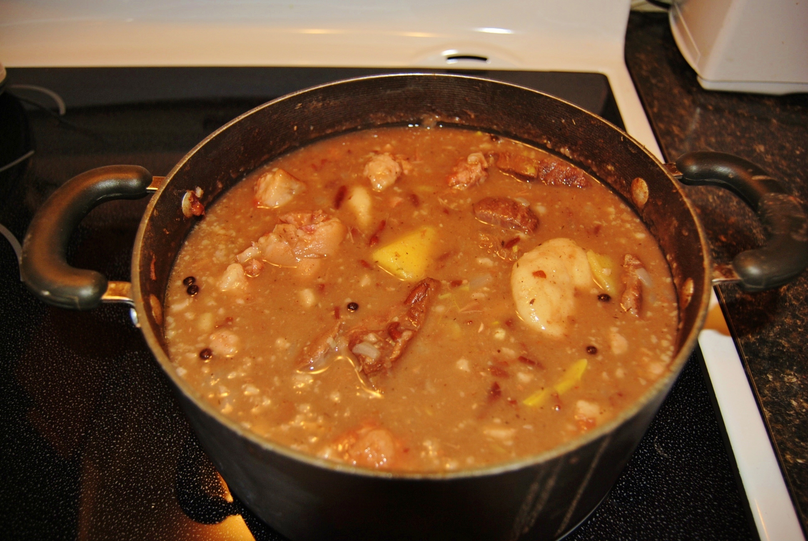

Red Peas Soup

Description
A thick and flavourful soup chock full of meat, starchy vegetables and chewy dumplings. Like most Jamaican soups, Red Pea Soup is more like a stew. It’s a main meal not a starter soup or one you’d have with salad or sandwich. Red Pea Soup sticks to your ribs and satisfies.
Note: This soup should be moderately thick, but if it is too thick add some boiling water.
Ingredients
- 1 1/2 cups Dry red peas (kidney beans)
- 8-10 cups Water, approx.
- 1 lb Stewing beef
- 1 large piece Yellow yam
- 1 large Sweet potato
- 1 medium onion, chopped or 3 Stalks green onion, chopped
- 1 tsp Dried thyme or 3 stalks fresh thyme
- 1 tsp Pimento seeds (optional)
- 1 (or 2) Scotch Bonnet pepper
- 1/2 tsp Black pepper
- Salt and pepper to taste
Dumplings
- Dumplings
- 1 cup flour
- 1/3 cup water
- 1/2 tsp salt
- Mix together to make stiff dough
Overnight Prep
Place dry kidney beans in large soup pot on stove, cover with water and soak overnight
Steps
Tip #1
When peeling a yellow yam, make sure to avoid letting it touch your skin. The starch in the yam will make your skin itch so I suggest holding it with a tea towel or paper towel when peeling
Tip #2
When it’s necessary to add more water to the simmering soup, use boiling water to keep the cooking temperature of the soup stable
-
Place stewing beef in pot with red peas and add enough water to cover the two ingredients. Bring to a boil then reduce heat to simmer for about 1 hour, or until peas and beef are cooked.
- Note: the beef will likely be cooked before the peas, so remove when tender.
- Note: In both pots, as water evaporates when cooking, add boiling water to cover ingredients.
- Peel and cut yam and sweet potato into large serving pieces; add to boiling soup. Add boiling water to pot to semi cover yams and potatoes.
- Make dumplings (see above) and add to boiling pot of soup.
- Add onion, thyme, pimento, Scotch Bonnet pepper and black pepper to soup pot and simmer until yams and potatoes are tender and soup has thickened.
- Taste soup for flavour and add salt or pepper, if needed.